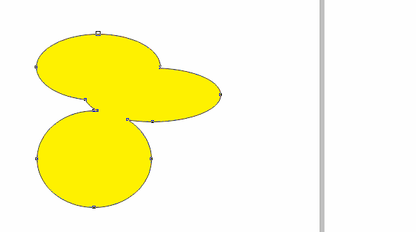

Offset Path, лучше чем в Ai
Sancho / 07.04.2011, 02:52/00:41
Форум:
Давно хотел сделать, для Корела, Offset Path как в иллюстраторе, а получилось даже немного лучше )))

Для просмотра анимации кликните на изображение или откройте в новом окне.
Пока что тестирую в "боевых" условиях.
последний вопрос Offset path будет работать с х3 корелом?
сижу жду доработки полной базы макросов ;)